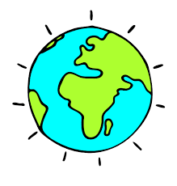

Eco Rangers: Protecting Our Awesome Planet!
Hey there, Eco Rangers! Our planet Earth is an amazing place filled with incredible animals, beautiful landscapes, and so much to explore. But it needs our help to stay healthy and happy. Let's learn how we can be eco-warriors and take care of our awesome planet!
What is Eco-Awareness?
Taking Care of Our Home
Eco-awareness means being aware of how our actions affect the environment. It's like taking care of a giant, beautiful house – our planet Earth! We want to keep it clean, healthy, and full of life for ourselves and future generations.
Climate Change: What's the Buzz?
Our Planet's Temperature
Climate change is when Earth's average temperature gets warmer. It's like a big blanket getting wrapped tighter around the planet. This can cause problems like melting ice caps, rising sea levels, and more extreme weather events.
- Experiment Time! Ask a grown-up to help you build a mini greenhouse model using a clear box and see how the temperature changes inside.
- Fossil Fuels: Research what they are and how they contribute to climate change. There are cleaner energy sources we can explore too!

How Can We Help?
Be a Super Saver!
There are many ways we can be eco-warriors and help our planet! Here are some things you can do at home:
- Turn off lights and electronics when you're not using them. Every little bit of saved energy helps!
- Reduce, Reuse, Recycle! Reduce the amount of trash you make, reuse things whenever possible, and recycle paper, plastic, and glass.
- Save water! Take shorter showers, turn off the faucet while brushing your teeth, and water your plants only when needed.
- Plant a tree! Trees absorb carbon dioxide, which helps fight climate change. You can plant one in your backyard or support organizations that plant trees.
Remember:
Even small actions can make a big difference! By taking care of our planet, we can ensure a healthy and happy home for all living things. Let's be the best Eco Rangers we can be!